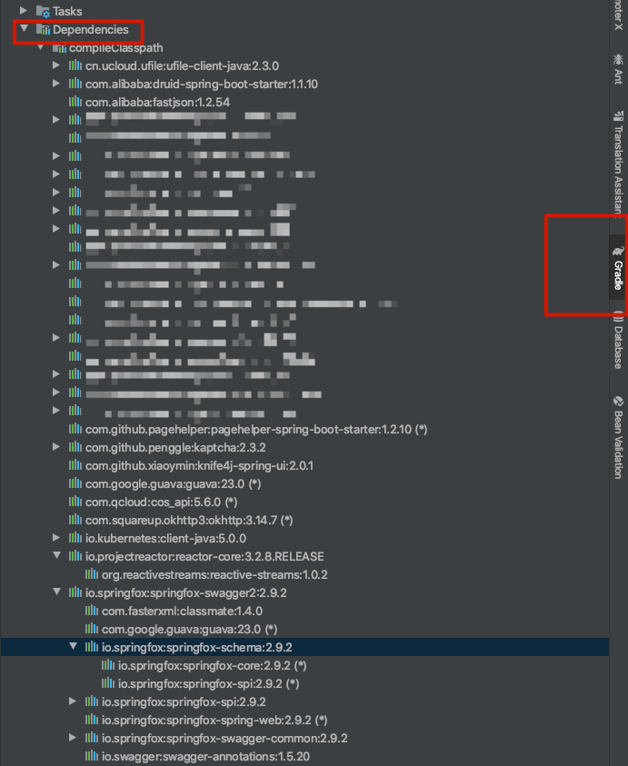
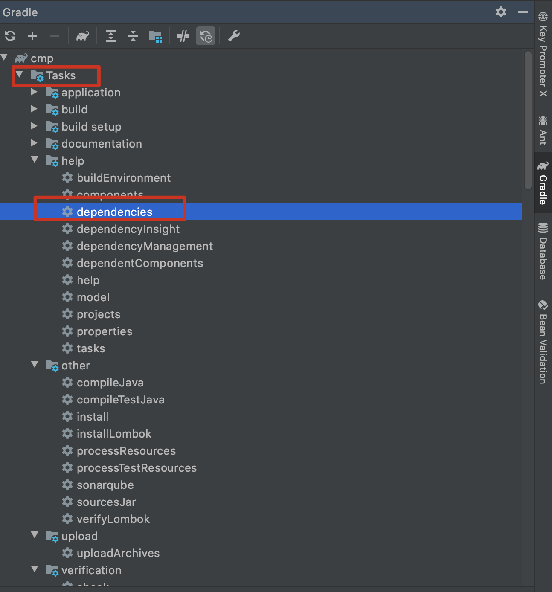
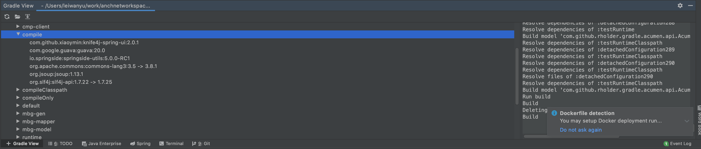

介绍
在开发过程中，我们不仅要引入我们其他项目的jar包，同时随着业务的复杂度加深，也免不了要引入许多的第三方开源库，那么不可避免的会出现依赖冲突的错误。
如何定位依赖冲突
排除法
排除法很简单，但是很耗时，就是选择一个依赖一个依赖的注释、编译、看结果。
IDEA gradle可视化
idea给我们提供了一个依赖树，但树只是一个平面图，并不是十分的直观。

Gradle Task
Gradle提供了一个task：dependencies，这个task能在命令行中显示依赖树之间的依赖关系。双击执行后就能在命令行中打印相关的依赖信息了.可以看到不同的buildType的信息

除了UI点击之外，也可通过命令行的方式来获取依赖树。
# implementation 指定的buildType信息
./gradlew app:dependencies -q --configuration implementation
这里我提取一点：
annotationProcessor - Annotation processors and their dependencies for source set 'main'.
\--- org.projectlombok:lombok:1.18.4
apiElements - API elements for main. (n)
No dependencies
archives - Configuration for archive artifacts.
No dependencies
asciidoctor
+--- org.springframework.restdocs:spring-restdocs-asciidoctor -> 2.0.2.RELEASE
+--- org.asciidoctor:asciidoctorj:1.5.3.2
| +--- org.jruby:jruby-complete:1.7.21
| \--- com.beust:jcommander:1.35
\--- org.asciidoctor:asciidoctorj-groovy-dsl:1.0.0.preview2
+--- org.codehaus.groovy:groovy-all:1.8.9
\--- org.asciidoctor:asciidoctorj:1.5.1 -> 1.5.3.2 (*)
bootArchives - Configuration for Spring Boot archive artifacts.
No dependencies
implementation - Implementation only dependencies for source set 'main'. (n)
+--- project mbg-model (n)
+--- project mbg-mapper (n)
+--- project cmp-client (n)
compileOnly - Compile only dependencies for source set 'main'.
+--- org.springframework.boot:spring-boot-configuration-processor -> 2.1.1.RELEASE
\--- org.projectlombok:lombok:1.18.4
default - Configuration for default artifacts.
+--- com.github.xiaoymin:knife4j-spring-ui:2.0.1
+--- org.jsoup:jsoup:1.13.1
+--- io.springside:springside-utils:5.0.0-RC1
| +--- com.google.guava:guava:20.0 -> 23.0
| | +--- com.google.code.findbugs:jsr305:1.3.9 -> 3.0.1
| | +--- com.google.errorprone:error_prone_annotations:2.0.18
| | +--- com.google.j2objc:j2objc-annotations:1.1
| | \--- org.codehaus.mojo:animal-sniffer-annotations:1.14
| +--- org.apache.commons:commons-lang3:3.5 -> 3.8.1
| \--- org.slf4j:slf4j-api:1.7.22 -> 1.7.25
compile - Dependencies for source set 'main' (deprecated, use 'implementation' instead).
+--- com.github.xiaoymin:knife4j-spring-ui:2.0.1
+--- org.jsoup:jsoup:1.13.1
\--- io.springside:springside-utils:5.0.0-RC1
+--- com.google.guava:guava:20.0
+--- org.apache.commons:commons-lang3:3.5 -> 3.8.1
\--- org.slf4j:slf4j-api:1.7.22 -> 1.7.25
compileClasspath - Compile classpath for source set 'main'.
+--- com.github.xiaoymin:knife4j-spring-ui:2.0.1
+--- org.jsoup:jsoup:1.13.1
+--- io.springside:springside-utils:5.0.0-RC1
| +--- com.google.guava:guava:20.0 -> 23.0
| | +--- com.google.code.findbugs:jsr305:1.3.9 -> 2.0.1
| | +--- com.google.errorprone:error_prone_annotations:2.0.18
| | +--- com.google.j2objc:j2objc-annotations:1.1
| | \--- org.codehaus.mojo:animal-sniffer-annotations:1.14
| +--- org.apache.commons:commons-lang3:3.5 -> 3.8.1
| \--- org.slf4j:slf4j-api:1.7.22 -> 1.7.25
+--- org.springframework.boot:spring-boot-configuration-processor -> 2.1.1.RELEASE
+--- org.projectlombok:lombok:1.18.4
runtimeElements - Elements of runtime for main. (n)
No dependencies
runtimeOnly - Runtime only dependencies for source set 'main'. (n)
No dependencies
testAnnotationProcessor - Annotation processors and their dependencies for source set 'test'.
\--- org.projectlombok:lombok:1.18.4
testCompile - Dependencies for source set 'test' (deprecated, use 'testImplementation' instead).
+--- com.github.xiaoymin:knife4j-spring-ui:2.0.1
+--- org.jsoup:jsoup:1.13.1
\--- io.springside:springside-utils:5.0.0-RC1
+--- com.google.guava:guava:20.0
+--- org.apache.commons:commons-lang3:3.5 -> 3.8.1
\--- org.slf4j:slf4j-api:1.7.22 -> 1.7.25
testCompileClasspath - Compile classpath for source set 'test'.
+--- com.github.xiaoymin:knife4j-spring-ui:2.0.1
+--- org.jsoup:jsoup:1.13.1
+--- io.springside:springside-utils:5.0.0-RC1
| +--- com.google.guava:guava:20.0 -> 23.0
| | +--- com.google.code.findbugs:jsr305:1.3.9 -> 2.0.1
| | +--- com.google.errorprone:error_prone_annotations:2.0.18
| | +--- com.google.j2objc:j2objc-annotations:1.1
| | \--- org.codehaus.mojo:animal-sniffer-annotations:1.14
| +--- org.apache.commons:commons-lang3:3.5 -> 3.8.1
| \--- org.slf4j:slf4j-api:1.7.22 -> 1.7.25
testCompileOnly - Compile only dependencies for source set 'test'.
\--- org.projectlombok:lombok:1.18.4
testImplementation - Implementation only dependencies for source set 'test'. (n)
+--- org.springframework.boot:spring-boot-starter-test (n)
+--- org.mybatis.spring.boot:mybatis-spring-boot-starter-test:1.3.2 (n)
\--- org.springframework.restdocs:spring-restdocs-mockmvc (n)
testRuntime - Runtime dependencies for source set 'test' (deprecated, use 'testRuntimeOnly' instead).
+--- com.github.xiaoymin:knife4j-spring-ui:2.0.1
+--- org.jsoup:jsoup:1.13.1
\--- io.springside:springside-utils:5.0.0-RC1
+--- com.google.guava:guava:20.0
+--- org.apache.commons:commons-lang3:3.5 -> 3.8.1
\--- org.slf4j:slf4j-api:1.7.22 -> 1.7.25
testRuntimeClasspath - Runtime classpath of source set 'test'.
+--- com.github.xiaoymin:knife4j-spring-ui:2.0.1
+--- cn.ucloud.ufile:ufile-client-java:2.3.0 (*)
+--- io.kubernetes:client-java:5.0.0 (*)
+--- org.glassfish.jersey.core:jersey-client:2.11 (*)
+--- org.glassfish.jersey.media:jersey-media-json-jackson:2.11 (*)
+--- org.glassfish.jersey.core:jersey-common:2.11 (*)
+--- org.apache.commons:commons-lang3:3.8.1
+--- com.github.penggle:kaptcha:2.3.2
| +--- javax.servlet:javax.servlet-api:3.1.0 -> 4.0.1
| \--- com.jhlabs:filters:2.0.235-1
+--- com.google.guava:guava:23.0 (*)
+--- com.alibaba:fastjson:1.2.54
+--- com.alibaba:druid-spring-boot-starter:1.1.10
| +--- com.alibaba:druid:1.1.10
| +--- org.slf4j:slf4j-api:1.7.25
| \--- org.springframework.boot:spring-boot-autoconfigure:1.5.12.RELEASE -> 2.1.1.RELEASE (*)
+--- io.projectreactor:reactor-core:3.2.8.RELEASE
| \--- org.reactivestreams:reactive-streams:1.0.2
+--- org.apache.poi:poi-ooxml:3.17
| +--- org.apache.poi:poi:3.17
| | +--- commons-codec:commons-codec:1.10 -> 1.11
| | \--- org.apache.commons:commons-collections4:4.1
| +--- org.apache.poi:poi-ooxml-schemas:3.17
| | \--- org.apache.xmlbeans:xmlbeans:2.6.0
| | \--- stax:stax-api:1.0.1
| \--- com.github.virtuald:curvesapi:1.04
+--- com.squareup.okhttp3:okhttp:3.14.7 (*)
+--- mysql:mysql-connector-java:6.0.6
+--- org.mybatis.spring.boot:mybatis-spring-boot-starter:1.3.2 (*)
+--- com.qcloud:cos_api:5.6.0 (*)
+--- com.github.pagehelper:pagehelper-spring-boot-starter:1.2.10 (*)
+--- tk.mybatis:mapper-spring-boot-starter:2.1.5
| +--- org.springframework.boot:spring-boot-starter:2.1.1.RELEASE (*)
| +--- org.springframework.boot:spring-boot-starter-jdbc:2.1.1.RELEASE (*)
| +--- org.mybatis:mybatis:3.4.6
| +--- org.mybatis:mybatis-spring:1.3.2
| +--- tk.mybatis:mapper-core:1.1.5
| | \--- javax.persistence:persistence-api:1.0
| +--- tk.mybatis:mapper-base:1.1.5
| | \--- javax.persistence:persistence-api:1.0
| +--- tk.mybatis:mapper-weekend:1.1.5
| +--- tk.mybatis:mapper-spring:1.1.5
| +--- tk.mybatis:mapper-extra:1.1.5
| +--- tk.mybatis:mapper-spring-boot-autoconfigure:2.1.5
| | +--- org.springframework.boot:spring-boot-autoconfigure:2.1.1.RELEASE (*)
| | +--- junit:junit:4.12 (*)
| | \--- org.hsqldb:hsqldb:2.4.1
| +--- junit:junit:4.12 (*)
| \--- org.hsqldb:hsqldb:2.4.1
+--- org.springframework.boot:spring-boot-devtools -> 2.1.1.RELEASE
| +--- org.springframework.boot:spring-boot:2.1.1.RELEASE (*)
| \--- org.springframework.boot:spring-boot-autoconfigure:2.1.1.RELEASE (*)
+--- org.springframework.boot:spring-boot-starter-web -> 2.1.1.RELEASE
| +--- org.springframework.boot:spring-boot-starter:2.1.1.RELEASE (*)
| +--- org.springframework.boot:spring-boot-starter-json:2.1.1.RELEASE
| | +--- org.springframework.boot:spring-boot-starter:2.1.1.RELEASE (*)
| | +--- org.springframework:spring-web:5.1.3.RELEASE (*)
| | +--- com.fasterxml.jackson.core:jackson-databind:2.9.7 (*)
| | +--- com.fasterxml.jackson.datatype:jackson-datatype-jdk8:2.9.7
| | | +--- com.fasterxml.jackson.core:jackson-core:2.9.7
| | | \--- com.fasterxml.jackson.core:jackson-databind:2.9.7 (*)
| | +--- com.fasterxml.jackson.datatype:jackson-datatype-jsr310:2.9.7
| | | +--- com.fasterxml.jackson.core:jackson-annotations:2.9.0
| | | +--- com.fasterxml.jackson.core:jackson-core:2.9.7
| | | \--- com.fasterxml.jackson.core:jackson-databind:2.9.7 (*)
| | \--- com.fasterxml.jackson.module:jackson-module-parameter-names:2.9.7
| | +--- com.fasterxml.jackson.core:jackson-core:2.9.7
| | \--- com.fasterxml.jackson.core:jackson-databind:2.9.7 (*)
| +--- org.springframework.boot:spring-boot-starter-tomcat:2.1.1.RELEASE
| | +--- javax.annotation:javax.annotation-api:1.3.2
| | +--- org.apache.tomcat.embed:tomcat-embed-core:9.0.13
| | +--- org.apache.tomcat.embed:tomcat-embed-el:9.0.13
| | \--- org.apache.tomcat.embed:tomcat-embed-websocket:9.0.13
| | \--- org.apache.tomcat.embed:tomcat-embed-core:9.0.13
| +--- org.hibernate.validator:hibernate-validator:6.0.13.Final (*)
| +--- org.springframework:spring-web:5.1.3.RELEASE (*)
| \--- org.springframework:spring-webmvc:5.1.3.RELEASE
| +--- org.springframework:spring-aop:5.1.3.RELEASE (*)
| +--- org.springframework:spring-beans:5.1.3.RELEASE (*)
| +--- org.springframework:spring-context:5.1.3.RELEASE (*)
| +--- org.springframework:spring-core:5.1.3.RELEASE (*)
| +--- org.springframework:spring-expression:5.1.3.RELEASE (*)
| \--- org.springframework:spring-web:5.1.3.RELEASE (*)
+--- org.springframework.boot:spring-boot-starter-amqp -> 2.1.1.RELEASE
| +--- org.springframework.boot:spring-boot-starter:2.1.1.RELEASE (*)
| +--- org.springframework:spring-messaging:5.1.3.RELEASE
| | +--- org.springframework:spring-beans:5.1.3.RELEASE (*)
| | \--- org.springframework:spring-core:5.1.3.RELEASE (*)
| \--- org.springframework.amqp:spring-rabbit:2.1.2.RELEASE
| +--- org.springframework.amqp:spring-amqp:2.1.2.RELEASE
| | +--- org.springframework:spring-core:5.1.3.RELEASE (*)
| | \--- org.springframework.retry:spring-retry:1.2.2.RELEASE
| | \--- org.springframework:spring-core:4.3.13.RELEASE -> 5.1.3.RELEASE (*)
| +--- com.rabbitmq:amqp-client:5.4.3
| | \--- org.slf4j:slf4j-api:1.7.25
| +--- org.springframework:spring-context:5.1.3.RELEASE (*)
| +--- org.springframework:spring-messaging:5.1.3.RELEASE (*)
| \--- org.springframework:spring-tx:5.1.3.RELEASE (*)
testRuntimeOnly - Runtime only dependencies for source set 'test'. (n)
No dependencies使用插件gradle-view
利用插件gradle-view可以直接通过面板的形式看到是哪个依赖库，具体是冲突了哪个版本。
插件地址：https://plugins.jetbrains.com/plugin/7150-gradle-view

如何解决冲突
删除其中一个jar包
删除其中一个jar包。
使用exclude来去除传递依赖
在知道是哪个库的哪些依赖的情况下,可以使用exclude来去除传递依赖，
exclude module：过滤模块
exclude group：过滤包名下所有依赖
如下：
implementation("com.qcloud:cos_api:5.6.0") {
exclude group: 'org.slf4j'
}取消所有传递依赖
configurations.all {
transitive = false
}强制依赖
对冲突的jar强行制定一个版本
gradleconfigurations.all {
resolutionStrategy.force "com.amazonaws:aws-java-sdk-bom:1.11.698"
}